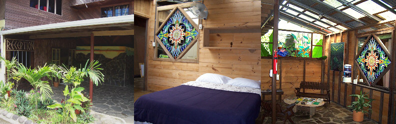

Costa Rica
River Rainforest Lodge in Sarapiqui kayak
raft safari relax
Welcome to Rancho Leona Sarapìqui
River Lodge. A rustic
and relaxing place to unwind and enjoy a Safari adventure.Kayaking,Whitewater rafting, rainforest
and waterfall
walks,
wildlife and bird watching.
Located in the Sarapiqui River and Rainforest with
activities for the whole family.

AffordableLodge rates from $12.00 USD
per person per night. Group Rates available.

See Our "Round the Rancho" andSarapiqui Slideshow. Check out See
and Dosection for some great affordable, local and off
the beaten path activities like boat excursions up the
Sarapiqui and Rio San Juan. Hiking inAguas Silvestres Centro
Biologico or the Tirimbina Rainforest Reserve.
Book your
Sarapiqui Safari Activities here. Friendly staff, comfortable common areas and patio, check
your email on our high speed wireless internet. Take a hike, kayak lesson, raft trip, jungle cruise or
just kick back and watch the river go by, exotic birds, and butterflies. Pura
Vida in Costa Rica! Make areservation
today and jump into the jungle!